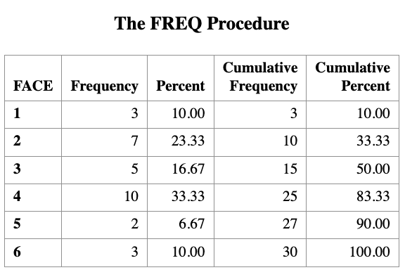
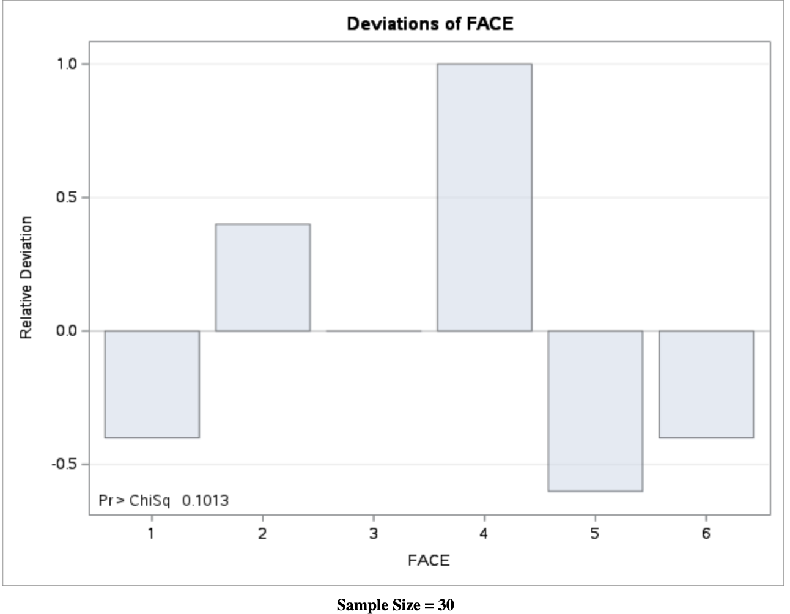
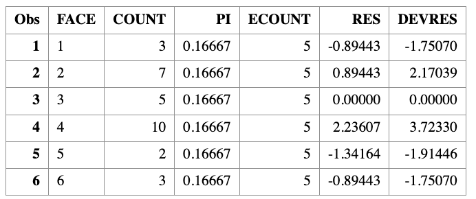
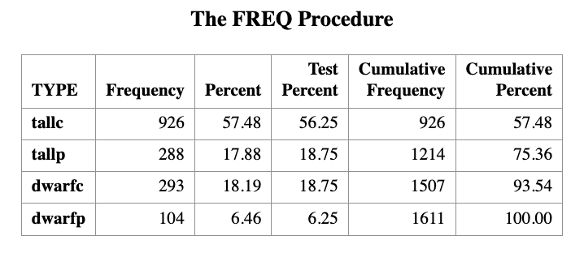
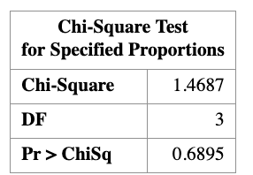
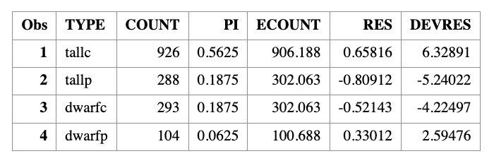
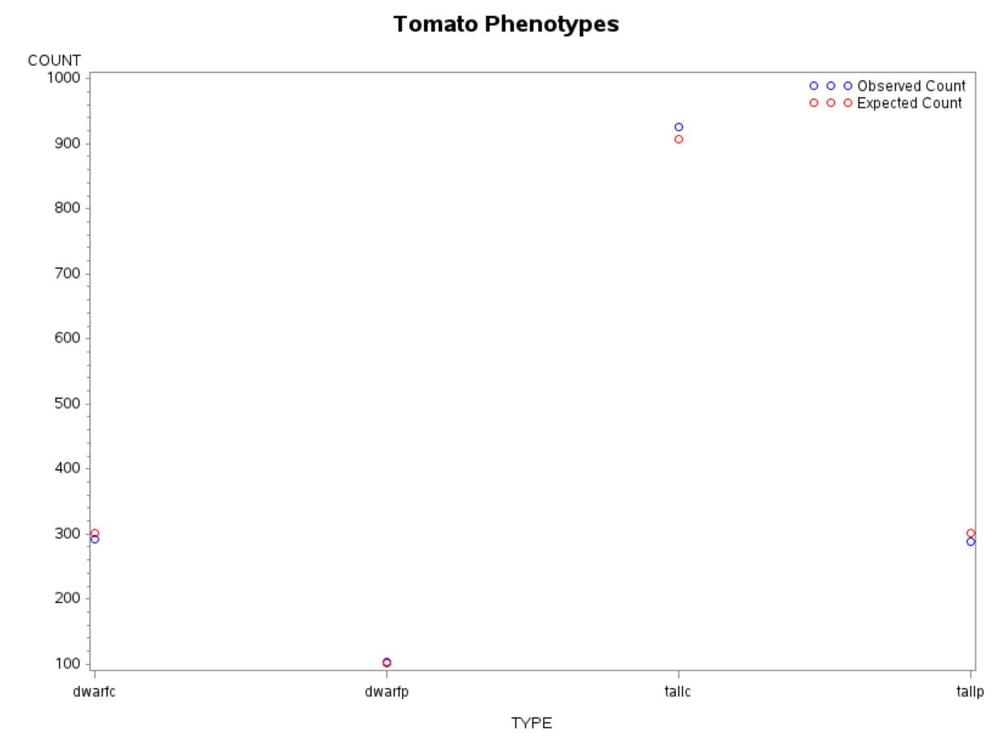

10 \(\chi^2\) Goodness of Fit Test
Learning Objectives
- Explain what is a diagnostic test.
- Explain what is a one-way contingency table. > 3. Apply the diagnostic test to perform inference for analyzing a one-way contingency table.
10.1 Motivation: What Is a Goodness-of-Fit Test?
A goodness-of-fit test, in general, refers to measuring how well the observed data correspond to a fitted (assumed) model.
We will use this concept throughout the course as a way of checking model fit.
Similar to linear regression, in essence, a goodness-of-fit test compares:
- Observed values, and
- Expected (fitted or predicted) values under a specified model.
Hypotheses for a Goodness-of-Fit Test
A goodness-of-fit test examines the following hypotheses:
\[ H_0 : \text{the model } M_0 \text{ fits} \]
versus
\[ H_1 : \text{the model } M_0 \text{ does not fit}. \]
10.2 Example: Categorical Data (Dice Example)
Consider the simplest example of a goodness-of-fit test with categorical data.
Suppose we want to test whether a fair six-sided die has equal probability for each face.
We compare the observed frequencies to those expected under the assumed model:
\[ X \sim \text{Multinomial}\left(n = 30,\; \pi_0 = \left(\tfrac{1}{6}, \tfrac{1}{6}, \tfrac{1}{6}, \tfrac{1}{6}, \tfrac{1}{6}, \tfrac{1}{6}\right)\right). \]
In this setting, the goodness-of-fit test asks whether the probability in each cell is equal to the specified value \(\pi_0\).
10.3 Hypotheses in Probability Vector Form
The hypotheses can be written as:
\[ H_0 : \boldsymbol{\pi} = \boldsymbol{\pi}_0 \]
versus
\[ H_1 : \boldsymbol{\pi} \neq \boldsymbol{\pi}_0. \]
10.4 One-Way Contingency Table
In such problems, the data can be summarized using a one-way contingency table:
| Categories | 1 | 2 | 3 | 4 | 5 | 6 |
|---|---|---|---|---|---|---|
| Number of Observations | \(O_1\) | \(O_2\) | \(O_3\) | \(O_4\) | \(O_5\) | \(O_6\) |
Here,
- \(O_1, O_2, \dots, O_6\) are observed counts from your dataset.
- The expected counts are computed from the assumed probability model.
These observed and expected counts form the basis of the \(\chi^2\) goodness-of-fit test.
10.5 One-Way Contingency Table and Model Fit
| Categories | 1 | 2 | 3 | 4 | 5 | 6 |
|---|---|---|---|---|---|---|
| Number of Observations | \(O_1\) | \(O_2\) | \(O_3\) | \(O_4\) | \(O_5\) | \(O_6\) |
| Expected Observations | \(n\pi_1 = 5\) | \(5\) | \(5\) | \(5\) | \(5\) | \(5\) |
In the setting of one-way contingency tables, we measure how well an observed variable \(X\) corresponds to a model specified by a vector of cell probabilities.
In other words, under the null hypothesis, we assume the data come from a particular distribution, and we test whether this assumed model fits the data well when compared with the saturated model (the model that fits the data perfectly).
The rationale behind model fitting is the assumption that a complex data-generating mechanism can be reasonably approximated by a simpler model. The goodness-of-fit test is applied to assess whether this assumption is supported by the data.
10.6 Test Statistics
There are two commonly used test statistics for the \(\chi^2\) goodness-of-fit test.
Pearson Goodness-of-Fit Test Statistic
The Pearson goodness-of-fit statistic is defined as
\[ X^2 = \sum_{j=1}^{k} \frac{(X_j - n\pi_{0j})^2}{n\pi_{0j}}. \]
An easy way to remember this formula is
\[ X^2 = \sum_{j=1}^{k} \frac{(O_j - E_j)^2}{E_j}, \]
where
- \(O_j = X_j\) is the observed count in cell \(j\), and
- \(E_j = \mathbb{E}(X_j) = n\pi_{0j}\) is the expected count in cell \(j\) under the null hypothesis.
10.6.1 1.2 Deviance Test Statistic
The deviance statistic is defined as
\[ G^2 = 2 \sum_{j=1}^{k} X_j \log\!\left(\frac{X_j}{n\pi_{0j}}\right) = 2 \sum_{j=1}^{k} O_j \log\!\left(\frac{O_j}{E_j}\right). \]
In some texts, \(G^2\) is also referred to as the likelihood ratio test (LRT) statistic, which compares the log-likelihoods of two models:
- \(L_0\): the reduced model under \(H_0\), and
- \(L_1\): the full (saturated) model under \(H_A\).
\[ G^2 = -2 \log\!\left(\frac{\ell_0}{\ell_1}\right) = -2 \left( L_0 - L_1 \right) \]
Note that \(X^2\) and \(G^2\) are both functions of the observed data \(X\) and a vector of cell probabilities \(\pi_0\). For this reason, we will sometimes write them as \(X^2(x, \pi_0)\) and \(G^2(x, \pi_0)\), respectively. When there is no ambiguity, we will simply use \(X^2\) and \(G^2\).
We will encounter these statistics repeatedly throughout the course, particularly in the analysis of two-way and \(k\)-way contingency tables, and when assessing the fit of log-linear and logistic regression models.
10.7 2. How Do They Work?
Both \(X^2\) and \(G^2\) measure how closely the assumed model—here, a multinomial model \(\text{Mult}(n, \pi_0)\)—fits the observed data.
When the null hypothesis \(H_0\) is true, both statistics have an approximate chi-square distribution with \(k - 1\) degrees of freedom. This allows us to use the chi-square distribution to obtain critical values and \(p\)-values for hypothesis testing.
If the sample proportions \(\hat{\pi}_j\) (i.e., the saturated model) are exactly equal to the model probabilities \(\pi_{0j}\) for all cells \(j = 1, 2, \ldots, k\), then \(O_j = E_j\) for all \(j\), and both \(X^2\) and \(G^2\) are equal to zero. In this case, the model fits the data perfectly.
If the sample proportions \(\hat{\pi}_j\) deviate from the model probabilities \(\pi_{0j}\), then both \(X^2\) and \(G^2\) are positive. Large values of \(X^2\) and \(G^2\) indicate that the data do not agree well with the assumed model \(M_0\).
10.8 Dice Rolls Example
Suppose that we roll a die 30 times and observe the following table showing the number of times each face appears.
| Categories | 1 | 2 | 3 | 4 | 5 | 6 |
|---|---|---|---|---|---|---|
| Number of Observations | \(O_1 = 3\) | \(O_2 = 7\) | \(O_3 = 5\) | \(O_4 = 10\) | \(O_5 = 2\) | \(O_6 = 3\) |
| Expected Observations |
We want to test the null hypothesis that the die is fair.
Under this hypothesis, \[ X \sim \text{Mult}(n = 30, \pi_0), \] where \[ \pi_{0j} = \frac{1}{6}, \quad j = 1, \ldots, 6. \]
This is our assumed model. Under \(H_0\), the expected counts are \[ E_j = \frac{30}{6} = 5 \quad \text{for each cell}. \]
We now have all the quantities needed to compute the goodness-of-fit statistics.
We now compute the two goodness-of-fit statistics explicitly.
10.8.1 Pearson chi-square statistic
\[ \begin{aligned} X^2 &= \frac{(3-5)^2}{5} + \frac{(7-5)^2}{5} + \frac{(5-5)^2}{5} + \frac{(10-5)^2}{5} + \frac{(2-5)^2}{5} + \frac{(3-5)^2}{5} \\ &= 9.2 \end{aligned} \]
10.8.2 Deviance (likelihood-ratio) statistic
\[ \begin{aligned} G^2 &= 2\Bigg( 3 \log\frac{3}{5} + 7 \log\frac{7}{5} + 5 \log\frac{5}{5} \\ &\qquad\quad + 10 \log\frac{10}{5} + 2 \log\frac{2}{5} + 3 \log\frac{3}{5} \Bigg) \\ &= 8.8 \end{aligned} \]
Note that although \(X^2\) and \(G^2\) have the same approximate chi-square distribution, their realized numerical values need not be identical.
The corresponding \(p\)-values are
\[ P(\chi^2_5 \ge 9.2) = 0.10, \qquad P(\chi^2_5 \ge 8.8) = 0.12. \]
Given a significance level of \(\alpha = 0.05\), we fail to reject the null hypothesis.
Importantly, failing to reject \(H_0\) does not mean that the null hypothesis is true. Rather, it means that we do not have sufficient evidence to conclude that it is false.
In this example, the fair-die model does not fit the data exactly, but the lack of fit is not large enough to conclude that the die is unfair at the 5% significance level.
The following SAS code implements the chi-square goodness-of-fit test for the dice example.
10.8.3 SAS code: Chi-square goodness-of-fit test
DATA DIE;
INPUT FACE $ COUNT;
DATALINES;
1 3
2 7
3 5
4 10
5 2
6 3
;
RUN;
PROC FREQ DATA=DIE;
WEIGHT COUNT;
TABLES FACE / CHISQ;
/*
TABLES FACE / NOCUM ALL
CHISQ TESTP=(16.67 16.67 16.67 16.67 16.67 16.67);
*/
RUN; 
The PROC FREQ step computes the Pearson chi-square statistic for testing whether the die is fair. The commented TESTP= option shows how expected probabilities can be specified explicitly.
Computing residuals and goodness-of-fit statistics manually
We now compute Pearson residuals, deviance residuals, and the test statistics \(X^2\) and \(G^2\) directly from the data.
DATA CAL;
SET DIE;
PI = 1/6;
ECOUNT = 30 * PI;
/* Pearson residual */
RES = (COUNT - ECOUNT) / SQRT(ECOUNT);
/* Deviance residual */
DEVRES = SQRT(ABS(2 * COUNT * LOG(COUNT / ECOUNT)))
* SIGN(COUNT - ECOUNT);
RUN;
PROC PRINT DATA=CAL;
RUN; 
Computing test statistics and p-values
PROC SQL;
SELECT
SUM((COUNT - ECOUNT)**2 / ECOUNT) AS X2,
1 - PROBCHI(CALCULATED X2, 5) AS PVALUE_X2,
2 * SUM(COUNT * LOG(COUNT / ECOUNT)) AS G2,
1 - PROBCHI(CALCULATED G2, 5) AS PVALUE_G2
FROM CAL;
QUIT;
Note that PROC FREQ automatically reports the Pearson chi-square statistic, but does not directly report the deviance statistic. The deviance statistic \(G^2\) must be computed manually as shown above.
10.9 Tomato Phenotypes Example
Tall cut-leaf tomatoes were crossed with dwarf potato-leaf tomatoes, and
\(n = 1611\) offspring were classified by their phenotypes as summarized in the table below.
| Categories | tall cut-leaf | tall potato-leaf | dwarf cut-leaf | dwarf potato-leaf |
|---|---|---|---|---|
| Number of Observations | \(O_1 = 926\) | \(O_2 = 288\) | \(O_3 = 293\) | \(O_4 = 104\) |
| Expected Observation |
Genetic theory predicts that the four phenotypes should occur with relative frequencies
\[
9 : 3 : 3 : 1,
\] which implies that the phenotypes are not equally likely. In particular, the dwarf potato-leaf phenotype is expected to be the least frequent.
We would like to test whether the observed data are consistent with this genetic theory.
10.9.1 Null hypothesis
Under the null hypothesis, the cell probabilities are
\[ \pi_1 = \frac{9}{16}, \quad \pi_2 = \pi_3 = \frac{3}{16}, \quad \pi_4 = \frac{1}{16}. \]
10.9.2 Expected frequencies
The expected counts under \(H_0\) are
\[ \begin{aligned} E_1 &= 1611 \times \frac{9}{16} = 906.2, \\ E_2 &= E_3 = 1611 \times \frac{3}{16} = 302.1, \\ E_4 &= 1611 \times \frac{1}{16} = 100.7. \end{aligned} \]
10.9.3 Goodness-of-fit results
Using these expected counts, we compute the goodness-of-fit statistics and obtain
\[ X^2 = 1.47, \qquad G^2 = 1.48. \]
The two statistics are nearly identical. Under the chi-square distribution with
\(k - 1 = 3\) degrees of freedom, the corresponding \(p\)-values are approximately
\[ p \approx 0.69. \]
Since the \(p\)-value is much larger than the significance level \(\alpha = 0.05\), we fail to reject the null hypothesis. The observed data are therefore consistent with the genetic theory predicting a \(9:3:3:1\) ratio.
10.9.3.1 SAS Code: Goodness-of-Fit Test
Step 1: Enter the observed counts
DATA LEAF;
INPUT TYPE $ COUNT;
DATALINES;
tallc 926
tallp 288
dwarfc 293
dwarfp 104
;
RUN;
Step 2: Pearson chi-square goodness-of-fit test
PROC FREQ DATA=LEAF ORDER=DATA;
WEIGHT COUNT;
TABLES TYPE / ALL CHISQ
TESTP=(56.25 18.75 18.75 6.25);
RUN;The proportions (56.25, 18.75, 18.75, 6.25) correspond to the theoretical probabilities \((9,3,3,1)/16\).
Manual Computation of Residuals, \(X^2\), and \(G^2\)

Step 3: Define theoretical probabilities
DATA PI;
INPUT PI;
PI = PI / 16;
CARDS;
9
3
3
1
;
RUN;
Step 4: Compute expected counts and residuals
DATA CAL;
MERGE LEAF PI;
ECOUNT = 1611 * PI;
/* Pearson residual */
RES = (COUNT - ECOUNT) / SQRT(ECOUNT);
/* Deviance residual */
DEVRES = SQRT(ABS(2 * COUNT * LOG(COUNT / ECOUNT)))
* SIGN(COUNT - ECOUNT);
RUN;
PROC PRINT DATA=CAL;
RUN;
Step 5: Compute \(X^2\) and \(G^2\) explicitly
PROC SQL;
SELECT
SUM((COUNT - ECOUNT)**2 / ECOUNT) AS X2,
1 - PROBCHI(CALCULATED X2, 3) AS PVAL1,
2 * SUM(COUNT * LOG(COUNT / ECOUNT)) AS G2,
1 - PROBCHI(CALCULATED G2, 3) AS PVAL2
FROM CAL;
QUIT;
Visualization: Observed vs Expected Counts
GOPTIONS RESET=ALL;
SYMBOL1 V=CIRCLE C=BLUE I=NONE;
SYMBOL2 V=CIRCLE C=RED I=NONE;
LEGEND1 LABEL=NONE
VALUE=('Observed Count' 'Expected Count')
ACROSS=1
POSITION=(TOP RIGHT INSIDE)
MODE=PROTECT;
TITLE "Tomato Phenotypes";
PROC GPLOT DATA=CAL;
PLOT COUNT*TYPE ECOUNT*TYPE / OVERLAY LEGEND=LEGEND1;
RUN;
QUIT;
TITLE;
Interpretation
- Small values of \(X^2\) and \(G^2\) indicate good agreement with the model
- Large \(p\)-values confirm no strong evidence against the \(9:3:3:1\) ratio
- Both Pearson and deviance statistics lead to the same conclusion
This example illustrates how goodness-of-fit testing connects theory, computation, and visualization in categorical data analysis.